BCI (Galea / EMOTIV) · Wearables · EHR · Diabetes
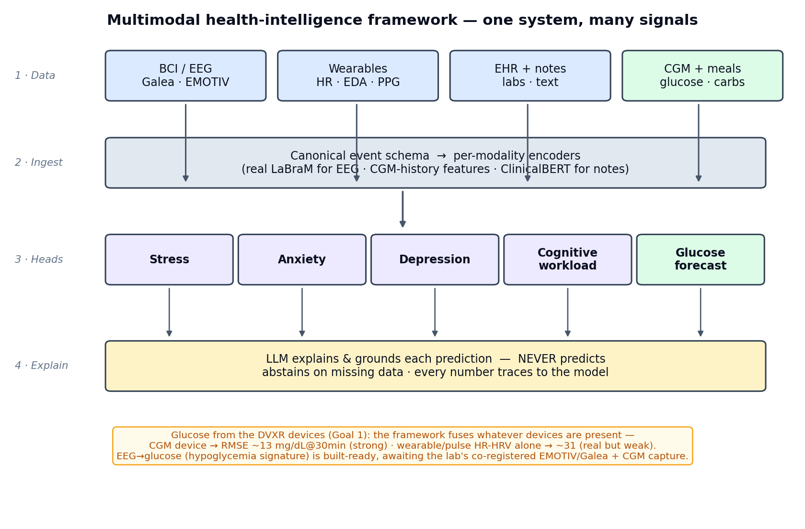
Behavioral metrics are wired into the pipeline, not yet run end-to-end.
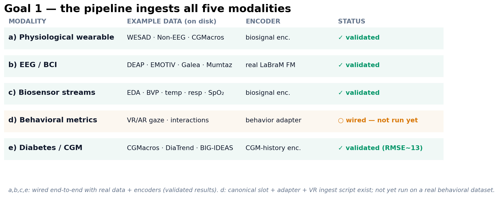
The end-to-end path each observation takes — from raw device stream to a guarded, explainable risk output.
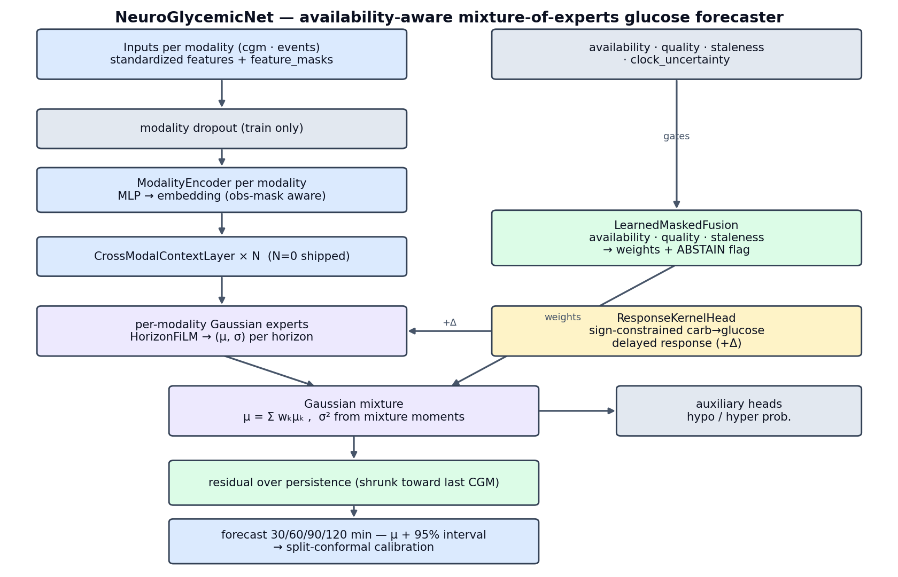
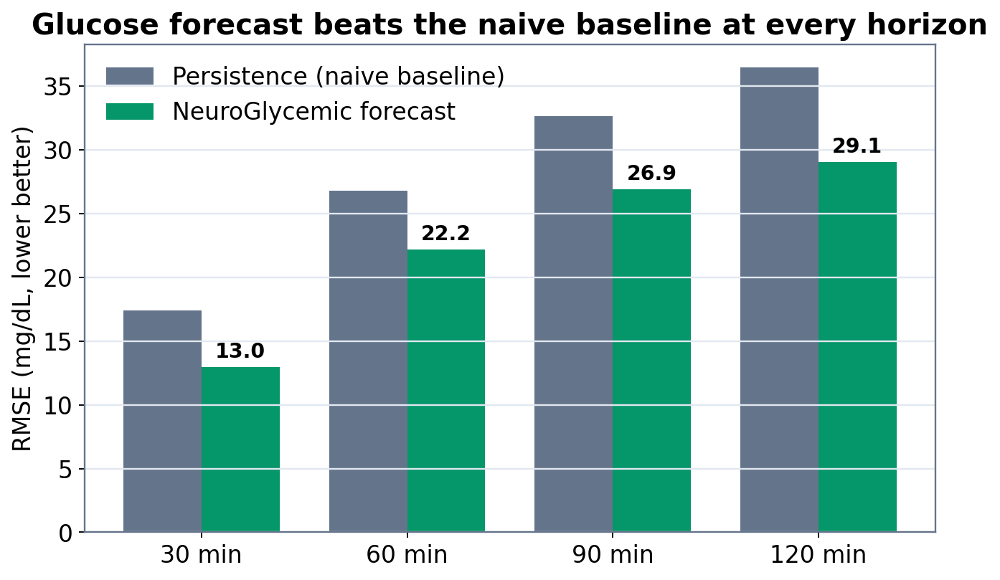
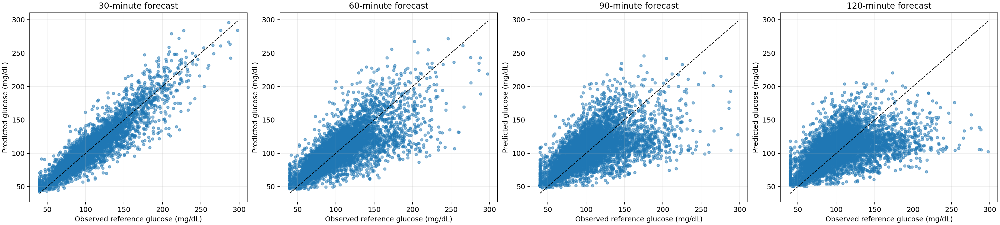
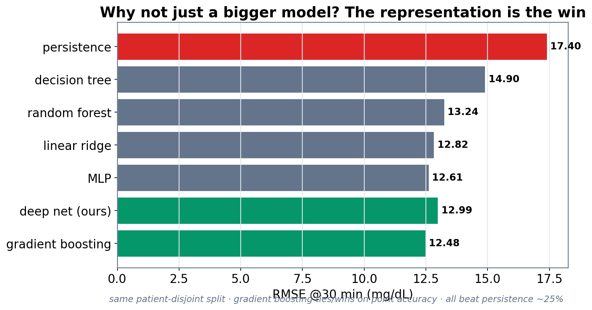
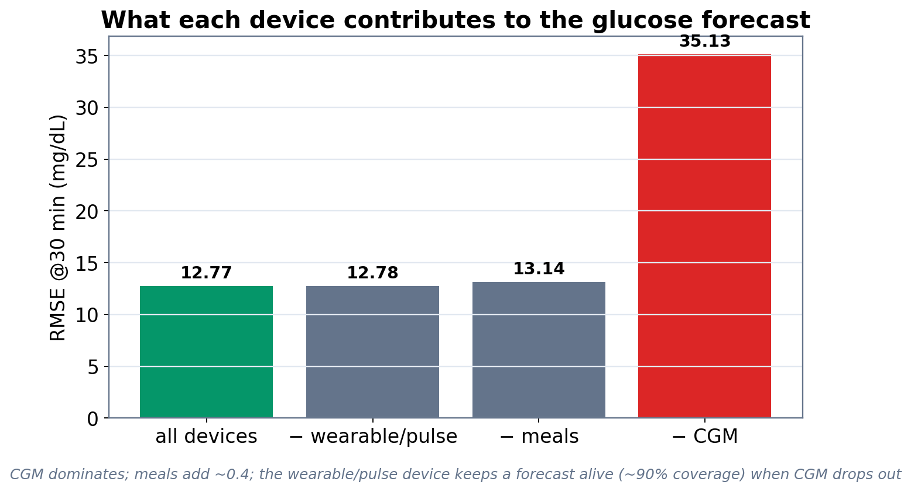
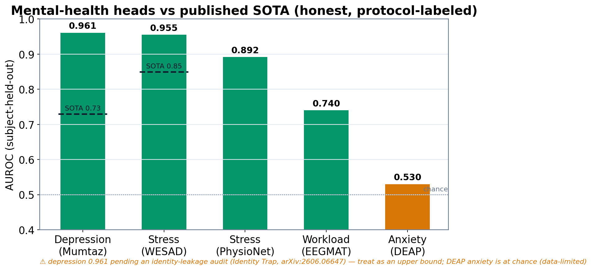
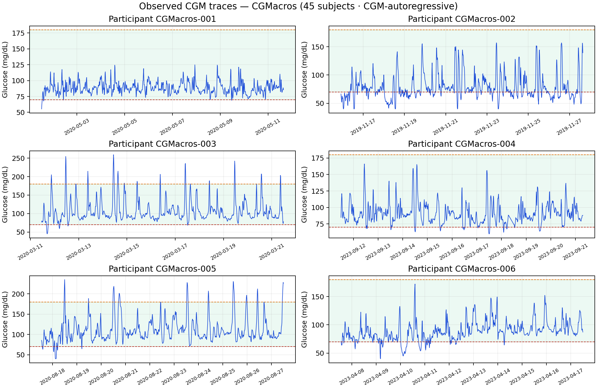
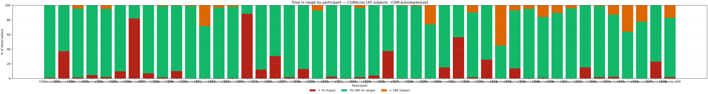
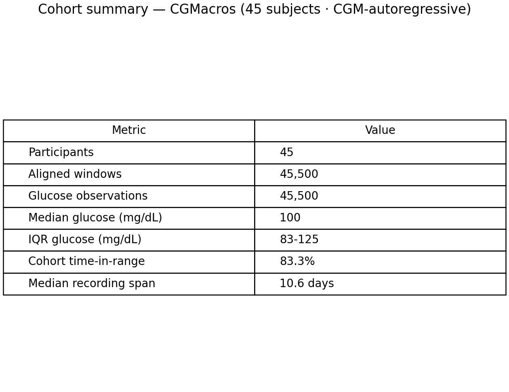
Demonstrations only — the real-time twin visualizes the pipeline; it is not a cleared clinical device.
The framework is a clinical risk-prediction system at pre-deployment maturity. It is not validated or cleared for clinical use; prospective validation is the required next step.